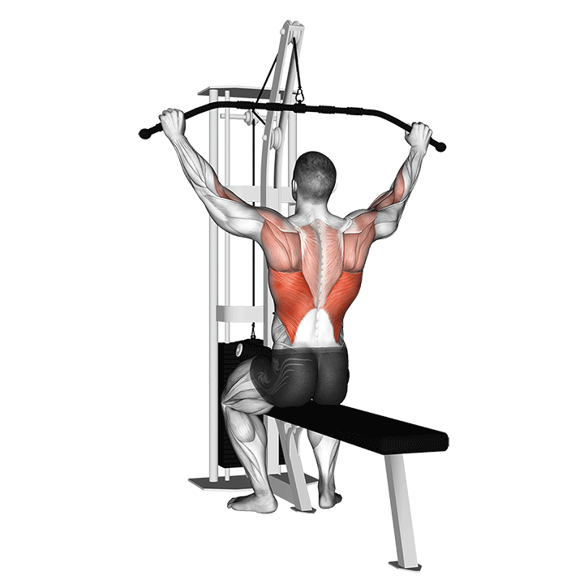

Costas
1. Remada Sentada

Realizar 3 séries de 8-12 repetições carga máxima
2. Remada com barra

Realizar 3 séries de 8-12 repetições carga moderada
3. Pull-down com corda
Realizar 3 séries de 10-15 repetições carga máxima
4. Puxada no Pulley
"usar pegas, nao triangulo"

Realizar 3 séries de 10-12 carga maxima